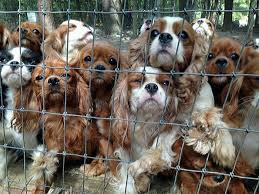
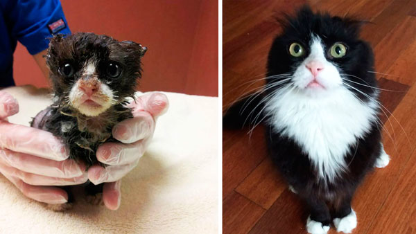

História de alguns dos animais resgatados por nós:

Irmãos Santos
Os irmãos foram encontrados em uma caixa de sapato em frente a loja em que um dos nossos colaboradores trabalha, em 2016. Eles estavam em condições de risco, sem alimentação ou qualquer suporte, mas isso foi suprido pelos nossos cuidados após os levarmos para a ONG. Os irmãos receberam o chamado de "Santos" pois foram adotados por uma família com o este sobrenome. A família adotou todos, que hoje vivem em paz e tranquilidade no sítio da família Santos.

Lara
Lara foi encontrada por um gari na rua, ainda filhote, numa lata de lixo. Isso aconteceu em 19/09/2012, quando ela foi levada para a ONG. Quando ela chegou em nossas mãos estava com vários problemas de saúde, fome, dentre outras coisas. Entretanto ela saiu da ONG, adotada por um casal apaixonado por gatos, de maneira totalmente diferente da qual ela chegou, após uma série de tratamentos e cuidados feitos por nós. Lara é uma gata extremamente dócil e brincalhona e hoje vive feliz!
Lista de todos animais resgatados:
Bob, cachorro resgatado em 02/07/2012, adotado em 20/12/2012.
Lara, cadela resgatada em 19/09/2012, adotada em 06/10/2012.
Fred, gato resgatado em 13/11/2012, adotado em 04/12/2012.
Meg, cadela resgatada em 22/01/2013, adotada em 10/04/2013.
Davi, cachorro resgatado em 02/10/2013, adotado em 20/12/2013.
Babi, gata resgatada em 02/07/2014, adotada em 20/12/2014.
Lery, gato resgatado em 11/10/2014, adotado em 23/11/2014.
Lara, cadela resgatada em 19/09/2015, adotada em 06/10/2015.
Fred, gato resgatado em 13/11/2015, adotado em 04/12/2015.
Davi, cachorro resgatado em 02/10/2016, adotado em 20/12/2016.
Irmãos Santos, cachorros resgatados em 05/07/2016, adotados em 20/08/2016.
Davi, cachorro resgatado em 02/10/2017, adotado em 20/12/2017.
Lery, gato resgatado em 11/10/2017, adotado em 23/11/2017.
Meg, cadela resgatada em 22/01/2018, adotada em 10/04/2018.
Bob, cachorro resgatado em 02/03/2018, para adoção.
Lari, gata resgatada em 12/03/2018, para adoção.
Apolo, cachorro resgatado em 10/04/2018, para adoção.